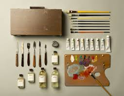

These are 9 Oil Painting Techniques for Beginners:
Oil Painting Technique 1 - Scumbling.
Oil Painting Technique 2 - Alla Prima (Wet on Wet).
Oil Painting Technique 3 - Glazing.
Oil Painting Technique 4 - Chiaroscuro.
Oil Painting Technique 5 - Impasto.
Oil Painting Technique 6 - Grisaille.
Oil Painting Technique 7 - Blocking In.
Oil Painting Technique 8 - Blending.
11 tools used in Oil Paintings:
1.Paint
2.Brushes
3.Turpentine or Mineral Spirits
4.A jar for Cleaning Brushes
5.Linsed Oil or Oil Medium
6.Newsprint or Rags
7.Palette
8.Painting Surface
9.Pencils
10.Easel
11.Painting Clothes